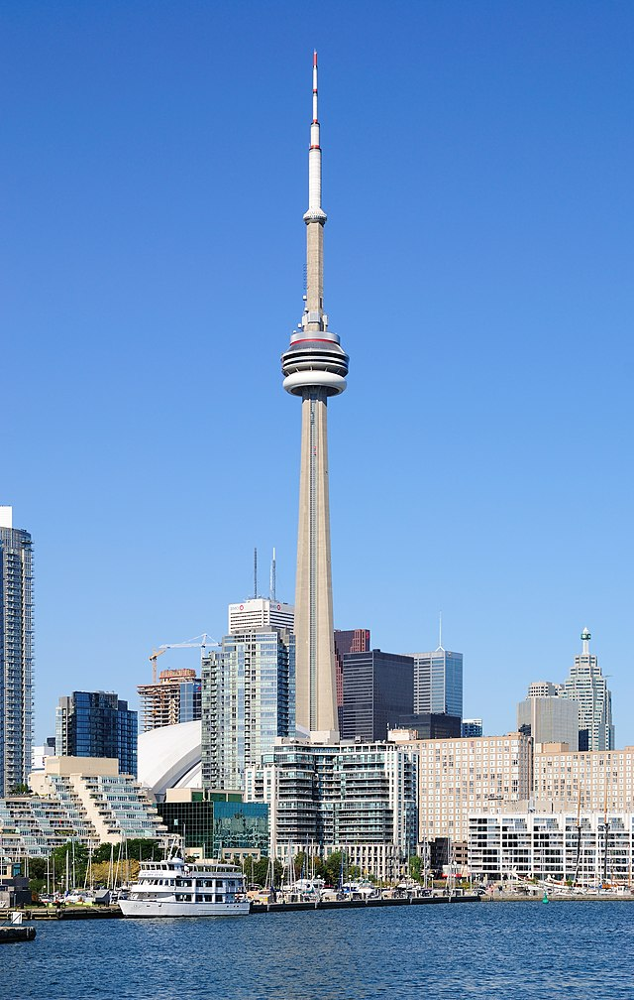
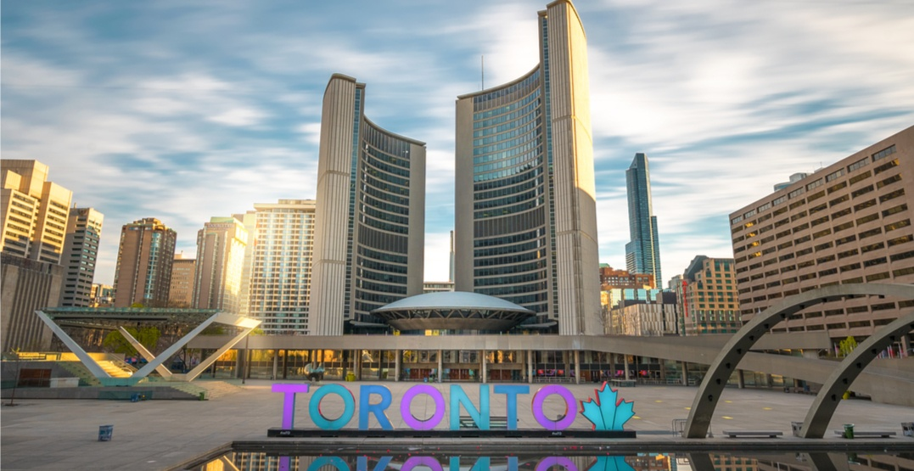
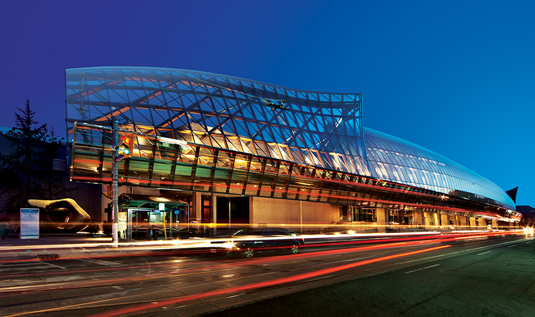

Toronto, la plus grande ville du Canada !
Capitale de l'Ontario, diamant le pion de sa rivale Montréal sur le plan économique dès les années 1970, Toronto n’en finit pas de s’étendre vers d’infinies banlieues entaillées de longues artères. La métropole forme la 4e ville la plus peuplée d’Amérique du Nord. Plus de 1 Canadien sur 5 vit aujourd'hui dans la capitale économique du pays.
Un développement spectaculaire porté par le dynamisme de l’immigration. Car Toronto s'impose comme la cité la plus cosmopolite du globe : près de 40 % de ses habitants ont une langue maternelle autre que l'anglais ! Résultat ? Une étonnante mosaïque de quartiers qui – sans être vraiment spectaculaires – dessinent la carte de la ville, de l’incontournable Chinatown à Greektown, en passant par Little India et Little Italy.
Bienvenue donc à l’ère du multiculturalisme et du « village global » – une expression née ici même. Cette mixité constitue l’identité de la ville et il est étonnant de constater à quel point des communautés savent ici cohabiter en paix.
Moins froide climatiquement que Montréal, Toronto paraît pourtant plus austère au premier coup d’œil. C'est une ville bien policée, utilitaire, anglo-saxonne, hérissée d’une multitude de gratte-ciel design.
Malgré cela, Toronto offre un autre visage : celui d’une cité où le stress reste contenu et où, à l’ombre des grands buildings, s’étalent encore d’attachants quartiers aux maisons victoriennes alternant rues fleuries et petits parcs.
Mais c'est aussi une ville riche en couleurs de peau, en petits restos ethniques et fusion, en festivals, en bars où la musique se déguste comme la bière sortie des nombreuses brasseries artisanales de la province. La mode y fait florès et la scène design s’y porte bien, réinvestissant des quartiers longtemps délaissés.
Que faire à Toronto
Toronto, avec ses 2 930 000 habitants, est la plus grande ville du Canada. On la surnomme la “ville reine”. Trépidante, cosmopolite, excitante et internationale : Toronto est une métropole composée de quartiers distincts, qui accueillent près d'une centaine de groupes ethniques. On affirme même qu'il s'agit de la ville la plus multiculturelle au monde.

CN Tower
Cette tour en béton fut construite par la compagnie ferroviaire Canadien National en 1976. Elle mesure plus de 553 mètres de hauteur (180 étages) et c'est le symbole par excellence de la ville. Pour accéder aux étages supérieurs, vous devrez emprunter un des six ascenseurs extérieurs en verre jusqu'au niveau panoramique. Vous serez propulsés à 346 mètres de hauteur en moins de 58 secondes, pour atteindre presque la hauteur de l'Empire State Building.

Toronto Islands
Les îles de Toronto, ornées de magnifiques arbres centenaires, de belles pelouses, de marinas et de rives sablonneuses offrent de splendides vues sur le centre-ville et s'étendent sur près de 6 kilomètres.

City Hall
L'hôtel de ville, construit en 1965, était le symbole de la ville, avant l'arrivée de la Tour du CN, et le monument le plus audacieux. Ses deux tours de béton ont une forme de parenthèses autour d'une rotonde centrale qui abrite la salle du Conseil.

Art Gallery of Ontario
Bienvenue dans l’une des plus grandes galeries d’art en Amérique du Nord ! Ses 45 000 mètres carrés d’espace abritent une sublime collection de près de 95 000 oeuvres. On y trouve de l’art autochtone et canadien, en passant par l’art européen, moderne, contemporain, africain, de la photographie, des estampes et dessins, 380 000 livres de la bibliothèque et la collection Thompson, un don 2000 oeuvres européennes et canadiennes provenant de la collection privée de Ken Thompson.